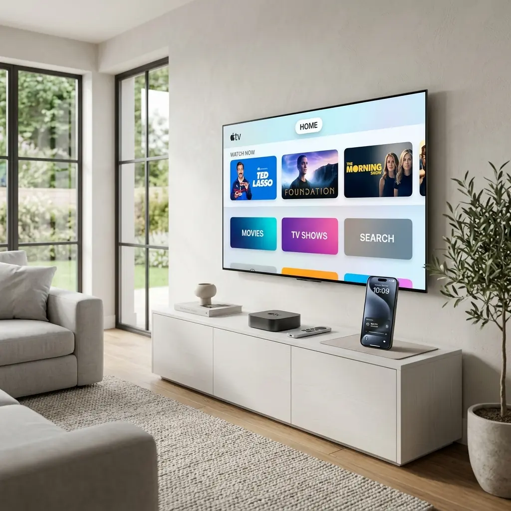

For years, consumers have been led to believe that purchasing the most expensive streaming box was the only way to guarantee a premium viewing experience. However, as processing power becomes cheaper and more ubiquitous, the hardware itself is no longer the primary bottleneck.
Today, selecting the right media player app is far more critical than upgrading your television. By optimizing your software ecosystem, you can bypass clunky interfaces and ensure perfect 4K stability.
The Rise of Software Decoding
Historically, streaming devices relied heavily on hardware decoding chips to process video signals. If your device didn't have the right chip, playback would stutter. In 2026, modern media player apps utilize incredibly efficient software decoding algorithms that can process high-bitrate HEVC and AV1 streams directly, regardless of the underlying physical hardware.

Features that Define Modern Media Players
When evaluating your software options, look for apps that offer intelligent buffer management. These applications dynamically adjust to your network's speed fluctuations, ensuring that a sudden drop in bandwidth doesn't immediately result in a frozen frame.
Furthermore, seamless Electronic Program Guide (EPG) integration is vital. The best apps preload EPG data efficiently, allowing you to browse thousands of channels without the interface lagging or crashing.
The Verdict
Upgrading your hardware should only be your last resort. By taking the time to explore and configure the right media player application, you can extract flagship performance out of budget-friendly devices.